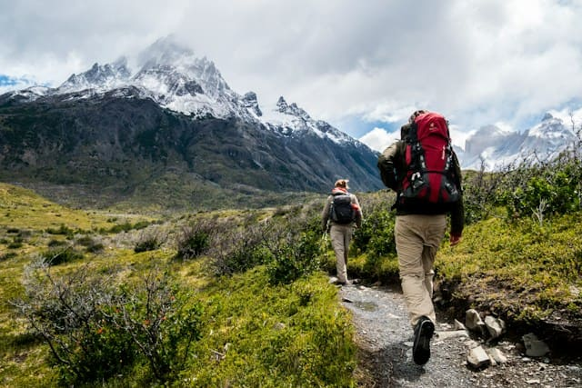
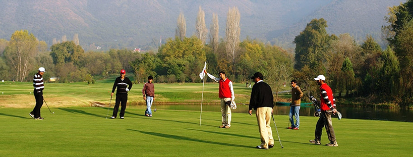
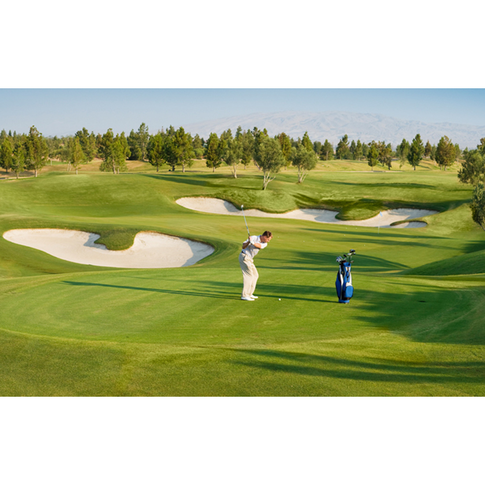

Or send us an email at: info.keeftravels@gmail.com
Explore Gulmarg
Nestled within the Pir Panjal range in the Kashmir Valley, Gulmarg
emerges as an extraordinary destination, boasting a blend of natural
wonders and cultural richness. Let's delve deeper into what makes
Gulmarg a unique and captivating experience.
Located approximately 50 kilometers from Lal Chowk in Srinagar,
Gulmarg is easily accessible by road. The journey from Lal Chowk to
Gulmarg typically takes around 2 hours, making it a convenient and
scenic escape from the bustling heart of Srinagar.
Gulmarg's winter persona captivates visitors with a picturesque
landscape draped in a thick blanket of snow. The Gulmarg Gondola,
one of the highest cable cars globally, ascends to Mount Apharwat's
summit, offering an awe-inspiring panorama. The winter months
transform Gulmarg into a haven for skiing and snowboarding
enthusiasts, drawing adrenaline seekers from across the world. As
winter gives way to spring, Gulmarg undergoes a remarkable
transformation. Blossoming flowers and verdant meadows create a
captivating spectacle. The summer months, with their pleasant
weather, reveal Gulmarg's multifaceted allure, attracting nature
enthusiasts and avid golfers to the world's highest golf course.
Beyond its natural splendors, Gulmarg's architectural aesthetics
reflect the timeless charm of Kashmir. Traditional structures and
warm hospitality create an inviting atmosphere. Exploring its
bustling markets reveals vibrant handicrafts, adding a layer of
cultural richness to the Gulmarg experience.
Road To Gulmarg: The journey from Srinagar to
Gulmarg takes you through the villages of Narbal, Goom, Dhobiwan,
and others, showcasing the shift from the urban environment of
Srinagar to the natural beauty of Gulmarg.Please note that our cab service can only transport you up to
Tangmarg due to government restrictions.From Tangmarg specialized vehicles with anti-skid tires, are
available to seamlessly continue your journey to Gulmarg, in
compliance with government regulations. This ensures a smooth and
safe transition, adhering to technical requirements.
*note: you now have to book gondola tickets online, it is advised to
book them before your visit as they get sold out quickly.
Click Here To Book On Their Official Page
GONDOLA RIDE
BREIF OVERVIEW
The Gulmarg Gondola is one of the world’s highest and most iconic
cable car rides, offering a thrilling ascent through breathtaking
Himalayan landscapes. Divided into two phases, the Gondola takes
visitors on an unforgettable journey. The first phase transports you
from Gulmarg to Kongdoori Station at 2,600 meters, where you'll
witness lush meadows, pine forests, and sweeping views of the valley
below. The second phase, rising to nearly 4,000 meters at Apharwat
Peak, reveals snow-capped mountains and glaciers, a view that seems
almost otherworldly.
In the winter, Apharwat becomes a skier’s paradise, drawing
adventure seekers from around the globe to its powdery slopes.
During the summer months, trekkers and nature lovers find themselves
captivated by the alpine meadows and crystal-clear skies. Whether
you're an adventure enthusiast looking to ski, snowboard, or trek,
or a nature lover wanting to take in serene, panoramic vistas, the
Gulmarg Gondola offers something for everyone. This ride is not just
a journey through stunning scenery but a gateway to Gulmarg's rich
natural beauty and exhilarating outdoor experiences.
Click Here To Know More
Phases Of Gondola Ride
The exhilarating cable car journey unfolds in two distinct
phases: Phase I:
A scenic 9-minute stroll from Gulmarg resort to
Kongdori Station (2600 m), nestled in the picturesque Kongdori
Valley. Phase II:
A 12-minute amble from Kongdori Station to
Kongdoori Mountain (3747 m), situated on the shoulder of
Apharwat Peak.
The Gulmarg Gondola project expanded in 2011 with the addition
of 90 chairlifts in its third phase. This remarkable extension
includes a chairlift connecting Kongdori to Marry Shoulder, a
hub for various skiing events. Traverse this picturesque route
in just 11 minutes and immerse yourself in the breathtaking
beauty of Gulmarg. Gulmarg Gondola's embarkation point is a
convenient 20-minute journey from Gulmarg. While taxis are
readily available, you can also opt for a leisurely walk to
reach the starting point.
SKIING
BREIF VIEW
Gulmarg, cradled in the Pir Panjal range of the Himalayas, is a skiing haven set against a backdrop of
snow-clad
slopes and pristine landscapes. Renowned globally for its exceptional skiing conditions, Gulmarg beckons
enthusiasts, from thrill-seekers to seasoned professionals, to experience the exhilaration of navigating its
diverse terrains.
The base of the Affarwat peak marks the start of the skiing experience. The mountain is split into two phases
which are accessible by Gondola. It connects Gulmarg to Kongdoori and is accessible by a Gondola. From the
base
camp at nearly 9000 ft, the first stop is at Kongdoori meadow at a height of nearly 11000 ft.
Prepare for Your Gulmarg Skiing Expedition
Before venturing to Gulmarg for an exhilarating skiing experience, meticulous preparation is key, especially
with sub-zero temperatures and abundant snow. Here's a detailed checklist to ensure you're well-equipped:
Ski Clothing:
Thermals, Fleece, Dry Fit T-Shirts: Essential layers for warmth and dryness.
Insulated Ski Jacket: A must-have waterproof insulated jacket for peak snowfall.
Ski Pants:Waterproof and insulated pants designed for skiing
Ski Socks:Warm, moisture-wicking socks extending up to your calves.
Accessories:
Gloves or Mittens: Waterproof and insulated to maintain warm hands.
Goggles: Protect your eyes from snow, wind, and UV rays.
Ski Helmet: Ensures safety and warmth during your adventure.
Neck Gaiter or Balaclava: Shields your face from the biting cold.
Woolen Cap: Keeps your head comfortably warm.
Backpack: Carry your essentials and safety gear effortlessly.
Sunscreen: Safeguard your skin from the intense mountain sun and snow reflection.
Lip Balm:Prevent chapped lips caused by the cold and wind.
Snacks: High-energy options like energy bars, nuts, and dried fruits.
Water: Stay hydrated with a water bottle or hydration system.
Adhar Card or Passport: Carry identification for emergency purposes.
First Aid Kit: Include essentials such as bandages, pain relievers, and blister treatment.
Dry Bag or Plastic Bags: Keep additional clothing and gear dry in case of wet conditions.
Safety Gear:
Avalanche Transceiver (if skiing in the backcountry):Essential for safety in avalanche-prone
areas.
Avalanche Probe and Shovel (if skiing in the backcountry):Vital tools for rescue operations.
Avalanche Airbag (optional, if skiing in the backcountry): >Adds an extra layer of safety in case
of an avalanche.
Heliskiing
Experience the unparalleled thrill of heli-skiing in the Himalayas, where extensive and diverse runs unfold
across steep terrains, weaving through enchanting deodar and birch forests. The longest descents originate
above 5,000 meters, gracefully descending to altitudes ranging from 2,200 to 2,700 meters. This exceptional
adventure is not limited to seasoned professionals; whether a novice or expert, you'll relish the feeling of
being dropped into valleys of fresh powder with your companions. Gulmarg, blessed with a consistent and
abundant snowfall, boasts an extraordinary terrain for diverse skiing and riding experiences. In case weather
conditions pose a challenge for heli-skiing, enjoy in-bounds skiing, explore Baba Reshi, or simply unwind at
the hotel.
Important Information:
Heliskiing operates from mid-January to the end of February.
Group bookings for four, eight, or twelve participants are recommended to form cohesive helicopter groups.
Solo or couple bookings will be paired with individuals of similar ability.
A minimum of three guests is required for daily helicopter operations.
Convenient pick-up and drop-off at Srinagar Airport are available.
Trekking
Overview
Gulmarg, meaning "The Meadow of Flowers," is an enchanting hill station located at an elevation of
2,653
meters, approximately 51 km away from Srinagar. Nestled amidst towering pines, majestic firs, and snow-capped
mountains, Gulmarg serves as a picturesque haven. It offers an ideal starting point for trekking adventures in
the northern Pir Panjal Range. The stunning vistas include views of Nanga Parbat to the north, visible from
various viewpoints such as Khilanmarg. Positioned to the west and elevated over 1,500 feet above the forested
hillside from Gulmarg, these viewpoints provide captivating glimpses of the surrounding landscapes.
Gulmarg offers 3 treks: Khilanmarg, Gulmarg Alpather Lake, Gulmarg Drung.

1. Khilanmarg Valley Trek
Embarking on the trek from Gulmarg, the journey to Khilanmarg Valley, situated 5.5 km away, is an
ideal
adventure for trekkers of all levels. With an easy difficulty level, it caters to both novice and expert
trekkers, providing a delightful experience for all. Covering a distance of 5.5 km from Gulmarg to Khilanmarg
and the same distance back, the total trek spans 11 km. The one-way trek takes approximately 2 hours, allowing
ample time to absorb the scenic beauty of the region. The trek starts at an altitude of 2650m in Gulmarg and
ascends to Khilanmarg at 2730m. This variation in altitude offers trekkers a diverse and visually rewarding
experience as they traverse the picturesque landscapes. Whether you're a beginner seeking a gentle
introduction to trekking or an experienced trekker looking for a scenic escapade, the Gulmarg to Khilanmarg
trek promises an enjoyable journey amid the captivating heights of Kashmir.
Route
Distance
Duration
Altitude
Difficulty
Gulmarg to Khilanmarg
5.5 km
2 Hours
2730 meters
Easy to Moderate
Khilanmarg to Gulmarg
5.5 km
2 Hours
2650 meters
Moderate
2. Alpather Lake Trek
Embarking on the trek to Alpather Lake is like stepping into a different realm. Located 13 km from Gulmarg at
an elevation of 14,700 ft, this enchanting lake, also known as the frozen lake, remains ice-covered for half
of the year. There are two mesmerizing routes to undertake this trek. The first option involves commencing the
journey from Gulmarg, a captivating trail that unfolds over approximately 4 hours, leading you to the pristine
lake. Alternatively, for a more expedited adventure, you can opt for the second route starting from the top of
Mt. Apharwat. Accessible via the Gondola, this elevated starting point reduces the trek time to just 1 hour to
reach the lake.
Route
Distance
Duration
Altitude
Difficulty
Gulmarg to Alpather Lake
13 km
4 Hours
4480 meters
Moderate
Mount Apharwat to Alpather Lake
1.5 km
1 Hour
4480 meters
Moderate
3. Drung Frozen Waterfall Trek
Nestled amidst picturesque landscapes, Drung is renowned for its captivating waterfall, flowing river, and
lush forests. Located just 3 km from Tangmarg, the journey to Drung unfolds over 1.5 hours, allowing trekkers
to immerse themselves in the scenic beauty. The day trek promises a delightful experience, offering
participants the chance to traverse verdant forests, meander through above-tree-line meadows, and behold
breathtaking views of Sunshine Peak and the majestic Himalayan range. Commencing our trek from Gulmarg, the
descent to Drung will be a memorable adventure. Lunch, conveniently packed, can be enjoyed either upon
reaching Drung or amidst the enchanting forest during the trek. After exploring Drung, trekkers have the
flexibility to either trek back to Gulmarg or opt for a cab, providing a comfortable return journey. This trek
to Drung is a perfect blend of nature's wonders and a rejuvenating exploration of Gulmarg's surrounding
beauty.
Route
Distance
Duration
Altitude
Difficulty
Tangmarg to Alpather Lake
3 km
1.5 Hours
4,780 meters
Moderate
Snowmobiling
Overview
In Gulmarg, snowmobiling has become a favorite among tourists seeking recreational thrills. Specifically
designed for snow and ice, snowmobiles operate seamlessly in open terrains without the need for roads or
trails. Gulmarg boasts over 80 km of meticulously groomed trails, offering a commercial snowmobiling
experience limited to specific areas. Embark on an adventurous journey into the heart of Gulmarg, exploring
miles of perfectly groomed trails and endless powder-filled bowls.
Snowmobile rentals are available for tourists, starting from the Gondola station in Phase I and passing
through Kongdori, Sunshine Peak Base, Mary's Shoulder, Khilanmarg, and the enchanting Gulmarg Western Wild
Forests.
You can enjoy Snowmobiling in three ways:
Long Circuit:
Embark on a thrilling snowmobile adventure from Kongdori to Khilanmarg, covering a distance of 3 km in
approximately 25 minutes. The ride is available between 9:00 am to 4:00 pm, ensuring you're accompanied by a
snowmobile operator throughout. If you're feeling adventurous, self-driving is permitted under the operator's
supervision.
Short Circuit:
For a quick yet exhilarating experience, opt for the half-ride starting from Kongdori, covering 1.5 km in
about 10 minutes. Timings are flexible between 9:00 am to 4:00 pm, with a dedicated snowmobile operator
guiding you. Feel the adrenaline as you take control during the ride under the operator's watchful eye.
Evening Tour:
Experience the enchanting landscapes of Gulmarg to Kongdori during the Evening Tour, available after 6:00 pm.
This 13 km journey, lasting 2-3 hours, includes a bonfire at Kongdori with meals, music, and comfortable
seating arrangements. Traverse through the scenic Gulmarg forests, culminating in a breathtaking sunset view
on the return from Kongdoori to Gulmarg.
Gulmarg Golf Course
The Gulmarg Golf Club is a public golf course in a meadow at Gulmarg in Baramulla district, Jammu and
Kashmir, India. It lies 35 km from Baramulla city. The golf course, at an elevation of 2,650 metres above sea
level, is the second highest green golf course in the world.
Wikipedia Address:Forest Block, Jammu and Kashmir 193403
Established: 1890
Par: 72
Length: 7,505 yards (6,863 m)
Designed by: Colonel Neville Chamberlain
Total holes: 18

Golf tourism is one of the main attractions of the Kashmir valley in summers. The peak season for golf in
Kashmir is from April to November. One advantage that the game of golf in Kashmir has over other golf
courses
that the weather here is quite refreshing and the shade of the bordering Chinar and Pine trees enables the
play to go on longer.

Gulmarg Wildlife Sanctuary
The Gulmarg Wildlife Sanctuary spread over 180 square kilometres is a protected area in Gulmarg, Baramulla
district of Jammu and Kashmir, India. It is the most beautiful and attractive sanctuary in J&K. You can also
trek to poonch through this sanctuary.
Wikipedia
For nature enthusiasts, bird watching in the Gulmarg Biosphere Reserve is a must-do activity in November.
Migratory birds start arriving, adding a touch of life to the snowy landscapes. Keep your binoculars handy
and spot a variety of avian species amidst the winter beauty.